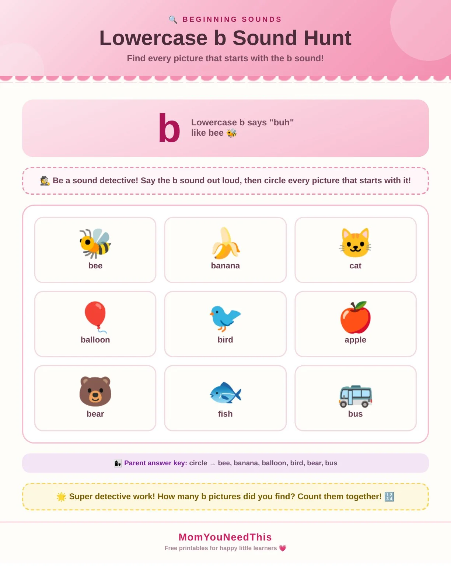

Lowercase b Sound Practice Recognize The Lowercase b And Its Sound
Most of the letters children see in books are lowercase! This printable helps your little learner recognize the lowercase b, connect it to its popping /b/ sound, and tell it apart from its mirror twin, d.
🐻 Bear
⚽ Ball
🍌 Banana
Quick Answer
This free printable helps preschoolers connect the lowercase letter b with its beginning sound — /b/, the lip-popping sound in bear, ball and banana. Children hunt for the letter b among other letters and circle every one they find, building phonemic awareness and letter recognition. Designed for ages 3-5. Download and print at home with no signup needed.

🔡 Find The Lowercase b
Point to the lowercase b together and say its sound. Then find every b hiding among the other letters and circle it. The trickiest neighbour is d, b's mirror twin — remember the order trick: for b, the line comes before the bump.
⬇️ Download Free Printable 🖨️ Print🎁 Free printable for toddlers & preschoolers
📖 Spot It In Books
After the printable, hunt for the letter b in a favorite picture book. Words like bear, ball and banana begin with the b sound — and b hides inside words too, like ra
Show how big B and little b are the same letter in two sizes. They are close cousins: capital B has a straight line with two bumps, while small b keeps the line and just one bump. Matching the pair builds strong letter knowledge.
🎨 Keep Exploring Free Letter Activities
More alphabet learning activities are added regularly for toddlers and preschoolers.
🎁 View All Free Resources🔊 The b Sound
The b sound is made with the lips. They press together, build up a little puff of air, and pop open — b. It is a burst sound: unlike s or f, you cannot stretch it out, so practise it in quick pops: b-b-bear, b-b-ball.
B begins bear, ball and banana on this page, and plenty more besides: bus, bed, bird and boat. It also ends words — listen for it at the end of tub, web and crab — and hides in the middle of rabbit.
Small b is the version your child will meet in books, starting words like bear and ending words like web. Every time your child spots one on this page, they are practising the exact shape they will read thousands of times.
🖨️ How to Use This Printable
Get started in minutes — everything here is free and made for busy parents.
- Download the printable. Tap the download button to save the free Free Lowercase b Sound Practice file to your device.
- Print it out. Use any home printer and regular paper — cardstock works great for pages little hands will use again and again. The print button opens the full-size page in a new tab if you prefer to print from there.
- Learn together. Sit with your child and say the sound out loud each time a b is found: “b says /b/.” Watch for d sneaking in — it is the classic mix-up. Short sessions work best.
- Explore more. Check the free printables linked below for your next activity.
❓ Free Lowercase b Sound Practice FAQs
Is this Free Lowercase b Sound Practice printable free?
Yes — every printable on MomYouNeedThis is 100% free to download and print. No signup, no payment, just tap the download button and print fresh copies of the b page whenever your child wants another hunt.
How do I use this lowercase b sound printable?
Print the page and work through it together: name the letter b, make its /b/ sound like the start of bear, and circle every b hiding among the other letters. Short, playful sessions work better than long lessons for little learners.
What literacy skills does this practice?
Letter recognition, beginning sounds, and print awareness — plus one skill this letter teaches better than any other: telling b apart from its mirror twin d, a distinction early readers use in every book. These are the core pre-reading skills that prepare children for phonics and reading.
🔗 More Free Printables You’ll Love
Pair this printable with more free learning activities from the MomYouNeedThis library.
- 🔊 Free Uppercase Letter B Sound PracticeFree printable uppercase letter b sound practice for little learners.
- 🔊 Free Lowercase Letter C Sound PracticeFree printable lowercase letter c sound practice for little learners.
- 🔊 Free Lowercase Letter D Sound PracticeFree printable lowercase letter d sound practice for little learners.
- 🔊 Free Lowercase Letter E Sound PracticeFree printable lowercase letter e sound practice for little learners.